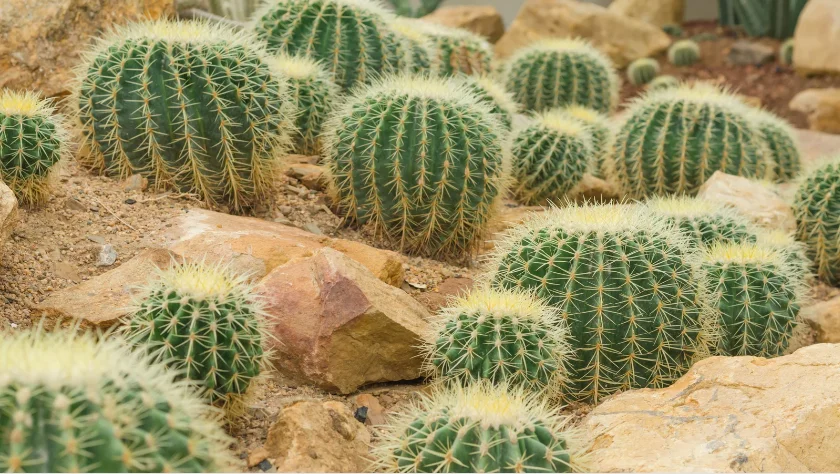
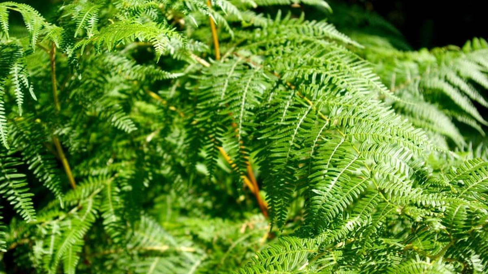

Flora adalah keseluruhan jenis tumbuhan atau nabatah yang hidup di suatu wilayah, daerah, atau waktu tertentu.
Jenis jenis flora berdasarkan habitatnya
Xerofit: Tumbuhan yang hidup di lingkungan kering atau panas seperti gurun, contohnya kaktus.
Hidrofit: Tumbuhan yang hidup di dalam atau di permukaan air, contohnya teratai.
Higrofit: Tumbuhan yang hidup di daerah sangat lembap atau basah, contohnya lumut dan paku-pakuan.


Flora Penting di Indonesia
Tumbuhan Endemik: Bunga Raflesia Arnoldii
Tumbuhan Industri: Kelapa Sawit, Karet, Kayu Jati
Tumbuhan Obat: Jahe, Kunyit, Temulawak
Cara Melestarikan Flora
Tidak melakukan penebangan liar
Melakukan reboisasi atau penghijauan
Membangun cagar alam dan taman nasional
Melestarikan flora bukan hanya tanggung jawab pemerintah, melainkan seluruh lapisan masyarakat. Dengan menjaga tumbuhan di sekitar kita, kita juga turut menjaga ketersediaan oksigen dan sumber daya alam bagi generasi mendatang.